OVERVIEW
Agency Revolution needed a new theme to help promote their recent platform transition. My task was to review existing user and client data to identify user flow challenges, research and test new editing capabilities for the website builder and incorporate findings into the design and development of a new theme.
USABILITY
One of the major element addressed was the menu system. Previous themes had relied heavily on menu system that featured clunky flyouts and often resulting in dropdowns that would extend off the page.
Knowing our clients offered a number of insurance types and services to their customers a new menu system was tested and implemented that allowed items to be organized and nested in a easy to read fashion.
A new mobile quick navigation bar was added to aid in four of the most common use case scenarios for new prospects and returning customers.
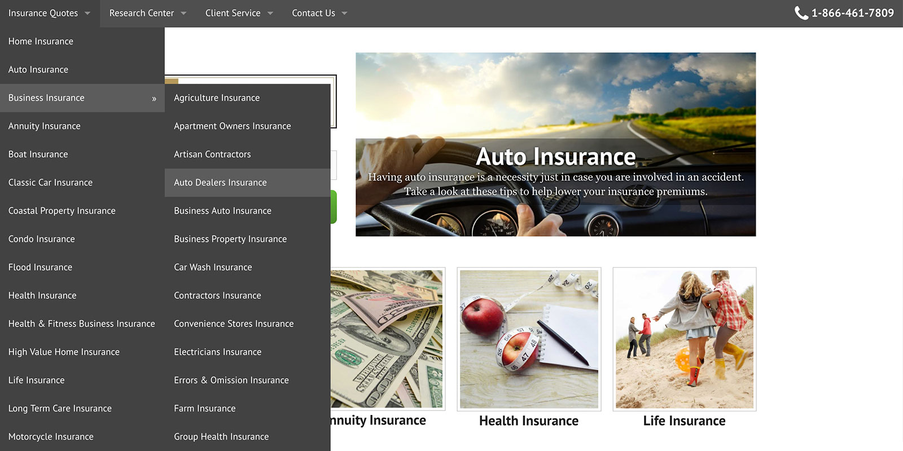
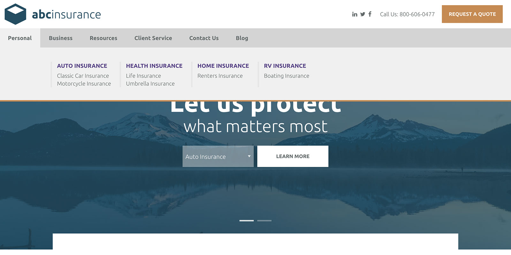
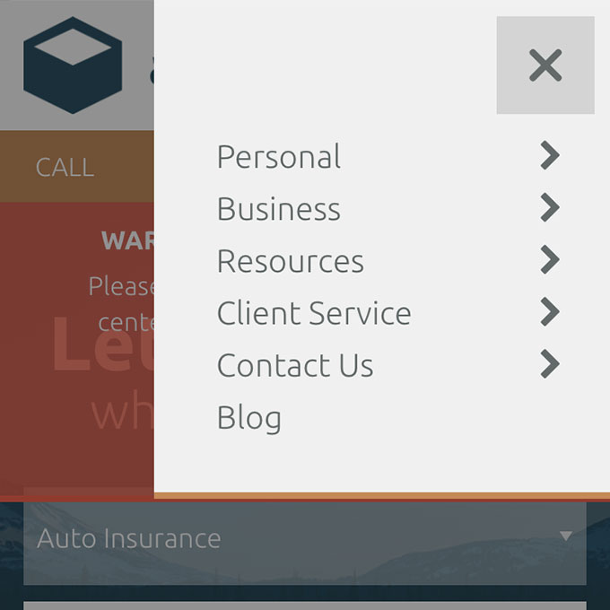
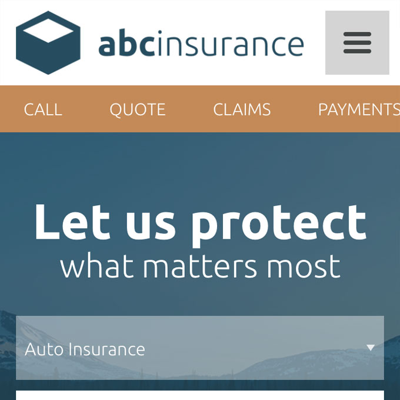
MODULARITY
With the new platform content became the focus in a big way. We wanted to take this further by offering an extension of the established editing system that would allow clients to move and modularize their data in an even easier way.
The theme was designed in sectional components that could be rearranged as needed. Rather than providing a generic grid template experience each section focuses on and features a number of unique layout options that best compliment a specific subject. This allowed clients to achieve a unique look for their site while guiding them to choose the best content. New sections would be added on an ongoing basis offering additional value to the client.
Each section was envisioned from low fidelity mockups to describe layout options, to high fidelity Figma prototypes and finally developed into a component system using SASS, Javascript and theme partials.
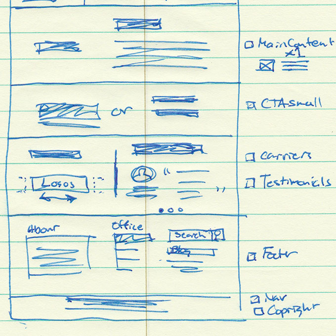
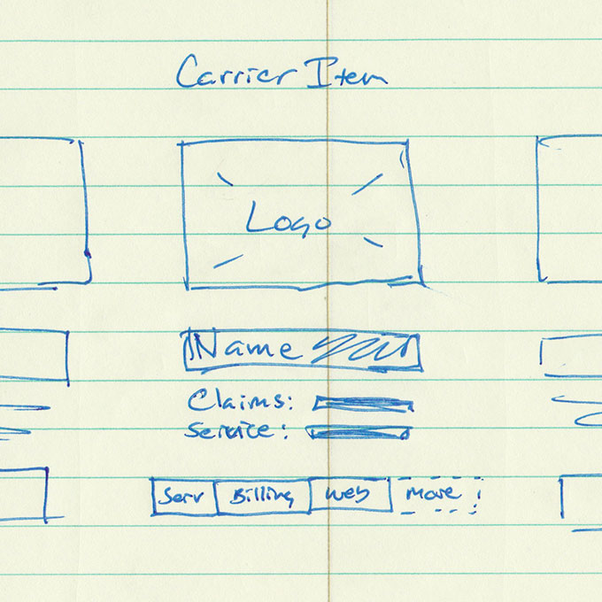
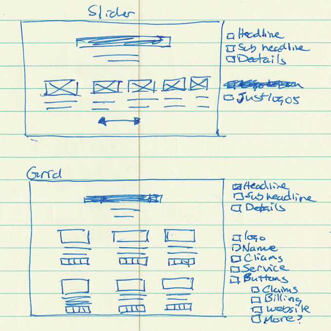
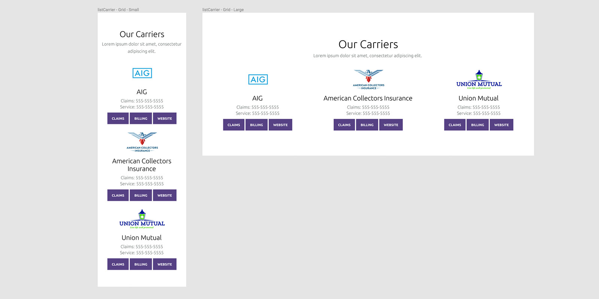
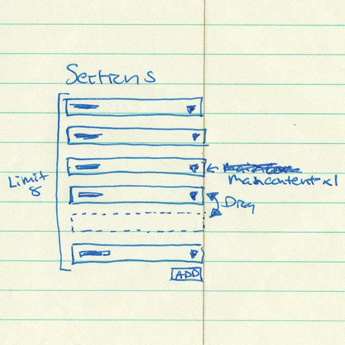
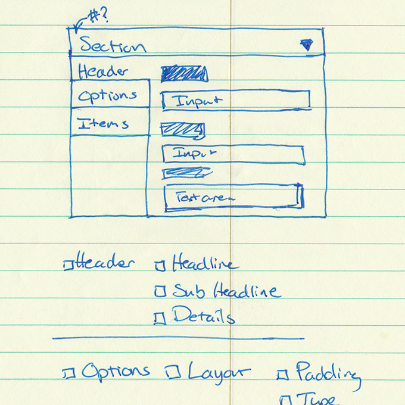
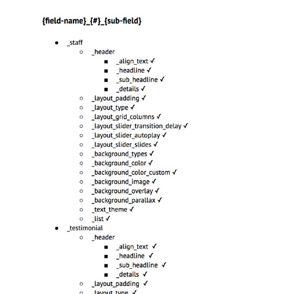
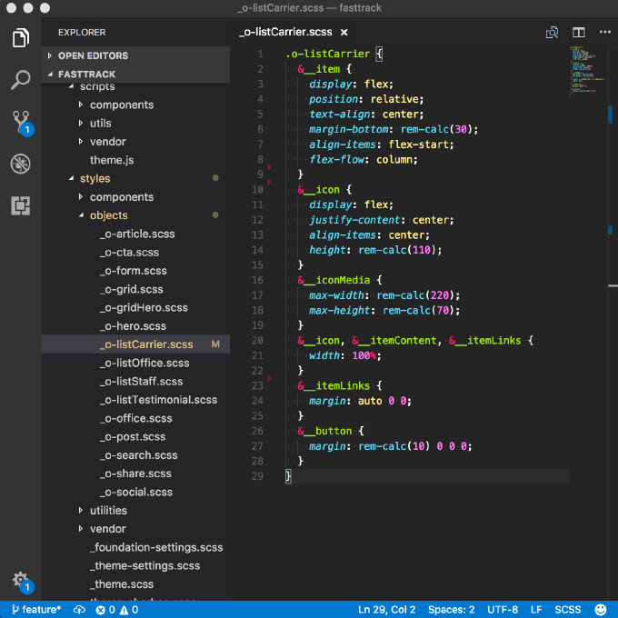
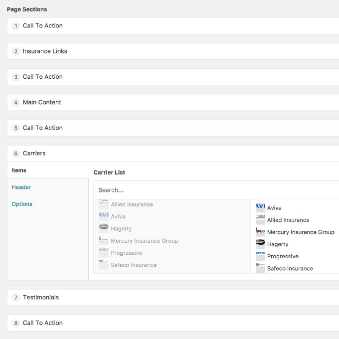
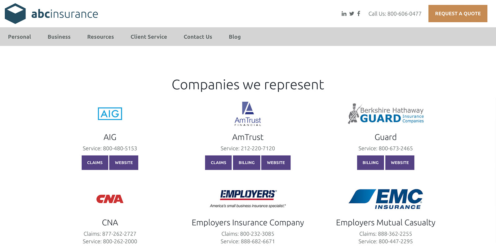
SUCCESS
The Fast Track theme offered a fresh design and a number of powerful editing capabilities that proved to be popular with clients and staff members.